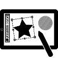

There are many ways you can contribute to Tails. No effort is too small and whatever you bring to this community will be appreciated. So read on to find out how you can make a difference in Tails.
Share your experience
Every user can help others or provide developers with useful information.
Donate
Donating speeds up the development of Tails.
Contribute your language skills
Translator
Translators can allow more people around the world to use Tails.
Speaker
Speakers can advocate Tails to all kinds of public.
Contribute your computer skills
Developer or maintainer
Software people with very diverse skills can improve Tails.
System administrator
System administrators can contribute to the infrastructure behind Tails.
Designer
Designers can make Tails easier to use and more appealing.
Table of contents
This section is only in English, because there is currently no way to
contribute to Tails if you do not understand English.
Reference documents
- Mission and values
- Design documents
- Blueprints to help structuring ideas for future improvements
- Merge policy
- Logo
- Personas
Tools for contributors
- Source code: Git repositories
- Roadmap
- GitLab source code and bug tracker
- Starter tasks for new contributors
- Building a Tails image
- Debian packages
- APT repository, to store our custom Debian packages
- How we manage and upgrade the Linux kernel.
- How we manage and upgrade tor.
- Glossary for contributors
Release cycle
Relationship with upstream and derivatives
Collective process
- Calendar of releases, meetings, working sessions, etc.
- Code of conduct
- Social contract
- People
- Marking a task as Starter
- Document progress
- Reimbursements
- Teams
- Interfaces between roles and teams
- Roles for sponsor deliverables:
Contact us
To talk to other Tails contributors, subscribe to the relevant mailing lists.